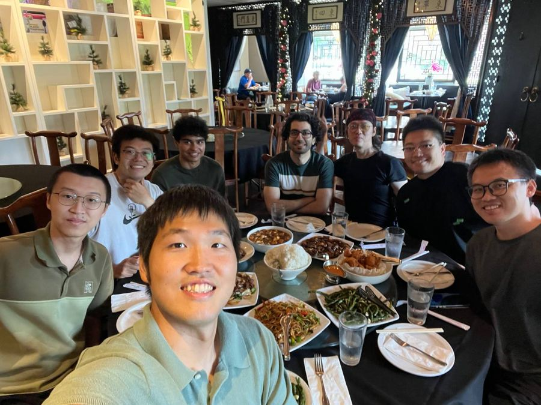

Invited talk at the Korea Transport Institute
Seongjin Choi presented “Can an LLM Understand Traffic Network?” at KOTI in Sejong, South Korea.
OBSERVE. UNDERSTAND. IMPROVE.
Minnesota Traffic Observatory brings real-world transportation into focus—connecting observation, artificial intelligence, and traffic science.
Try the traffic demo See our researchTRY IT · ILLUSTRATIVE SIMULATION
Both rings start from the same stop-and-go jam with the same driver noise. On the right, automated vehicles (gold) drive at the average speed instead of chasing gaps. Darker cars are slower.
A simplified car-following model inspired by the 2016 ring-road field experiment led by co-director Raphael Stern.
RESEARCH IN ACTION
Funded projects with MnDOT, the National Science Foundation, and University partners. All 29 projects →


LATEST NEWS
Seongjin Choi presented “Can an LLM Understand Traffic Network?” at KOTI in Sejong, South Korea.

Feng works on AI integration in traffic operations, agentic traffic simulation, and synthetic population generation.
PMA-Diffusion is published in Transportation Research Part C; Weaver (TR Part C) and TrajFlow (Artificial Intelligence for Transportation) are accepted. All three are now out.
LEADERSHIP
Combining expertise in artificial intelligence and traffic science to shape the next generation of the observatory.

CO-DIRECTOR
Assistant Professor
Artificial intelligence, generative models, and spatiotemporal learning for transportation systems and operations.

CO-DIRECTOR
Associate Professor
Traffic flow modeling and control, connected and automated vehicles, and safety for all road users.
Department of Civil, Environmental, and Geo- Engineering · University of Minnesota
HISTORY
MTO’s legacy connects transportation research, education, and practice. Its historical mission includes testing operational strategies and supporting learning for students and transportation professionals.
That foundation guides our next phase: asking new questions while staying grounded in the transportation systems people use every day.
Following several years of paused activity, we are opening a new chapter for the observatory: one that builds on its longstanding role in evaluating transportation management strategies and traveler information technologies.
MTO’s institutional profileMTO data archive“Makes transportation smarter” (archive)MnDOT research
BUILD THE NEXT CHAPTER WITH US
Interested in transportation research, student collaboration, or a shared research challenge? Connect with our co-directors through their University profiles.